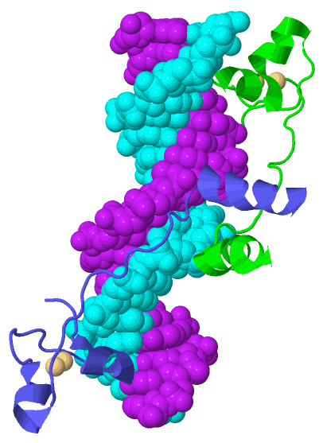
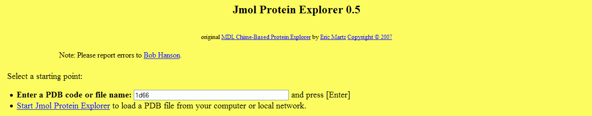

| BNFO 491 |
Protein Explorer - Help |
Fall 2012
|
|
Protein Explorer is a resource that enables you to visualize
proteins in three-dimensions and provides tools that help you focus on different features
within the protein. It has great capabilities, but most of them require you to interact with
it through a specialized language. The language is simple, but even so, if you want a
menu-driven interface, you might prefer
FirstGlance,
at the expense of some capabilities.
There is a lot of online help available through Protein Explorer. The purpose of this web page is to help you find that help and figure out which brand is what you need. |
 |
Getting Started
Going to Protein Explorer gets you to the following page:Your ticket inside is a four-character PDB (Protein DataBase) code. If you know the protein you want but don't know its PDB code, you might be able to find it by searching the Protein Data Base. Summary of Help Resources
|